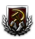
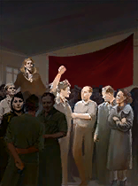
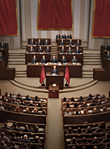
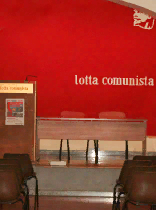
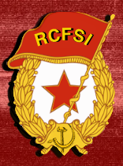
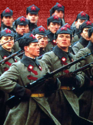
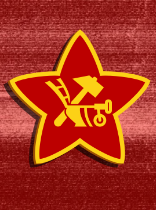
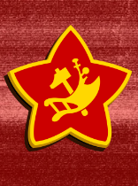
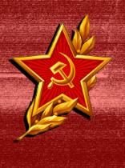
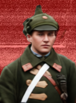

1. Header & Flavor Quotes
Name: The Internationale (INT) – Lotta Comunista, L'Internazionale
Leader: the Direzione dei Circoli Operai (CGIL-FIOM) when the civil war breaks out; the Workers' Central Councils of Lotta Comunista after the Coup de Main.
"Lotta Comunista, the PCR and the metalworkers of the FIOM have spent decades arguing over who betrayed the working class first. Now they man the same barricades from Turin to Trieste."
Focus Tree & Path Overview
Target ideology: vanguard_socialism (Lotta Comunista) or revolutionary_socialism (PCR).
Overview: Italy's internationalist revolution. The Internationale wins the civil war from the industrial north, then founds the International and exports the revolution across Europe.
| Route | Requirement | Result |
|---|---|---|
| Coup de Main (Italian tree) | One of Infiltration into the Army, Communist Demonstrations or Occupied Factories | +30% vanguard socialism, then Italy becomes INT |
| Against War: REVOLUTION!!! (Italian tree) | Italy is at war (no prerequisite focus) | Vanguard socialist government, +70% vanguard socialism, then Italy becomes INT |
| Civil war | Pick the Internationale in "Italy Tears Itself Apart" | 9 states, 36 divisions, civil war tree |
2. Technical Infobox & Prerequisites
| Field | Value |
|---|---|
| Country Tag | INT |
| Capital | Genoa during the civil war; Milan after the Coup de Main or after winning the civil war |
| Ruling party (civil war) | progressive – CGIL-FIOM, elections every 12 months |
| Ruling party (after the coup) | vanguard_socialism – Lotta Comunista, elections allowed |
| Stability / War Support | 60% / 70% |
| Research slots | 3 |
| Cores | all 35 states of the Republic (not Monaco, San Marino, the Vatican, Malta or Istria) |
| Focus Tree IDs | INT_civil_war_focus (civil war), then INT_focus |
| Starting popularity | % |
|---|---|
| Vanguard Socialism (Lotta Comunista) | 36 |
| Revolutionary Socialism (PCR) | 30 |
| Progressive (CGIL-FIOM) | 25 |
| Authoritarian Socialism (PCd'I) | 5 |
| Liberal (PDS) | 3 |
| Reactionary | 1 |
The road from Italy
In the Italian tree: On the Side of the Proletariat → Leninist and Trotskyist Alliance (mutually exclusive with Hardline communist) → Rooting of the Party / Make the Union Yours → Infiltration into the Army, Communist Demonstrations, Occupied Factories (+10% vanguard, +5% revolutionary socialism each) → Coup de Main. Against War: REVOLUTION!!! has no prerequisite: Italy can take it whenever it is at war, and it locks out the Coup de Main.
The tag switch gives INT all of Italy's technology, units, stockpiles, fleet, air force and states, moves the capital to Milan, adds 20% vanguard socialism and 30 "Guardia Internazionalista" divisions, loads INT_focus and founds the International.
3. Lore & Geopolitical Goals
Background: in Naples the Stalinists have hung the old portraits back on the walls; in Rome the Black Barons have dusted off the fasces. Two enemies, two fronts, and one conclusion: the revolution will be internationalist or it will not happen at all.
Short-term goals: hold the north, take Rome and end the war against the Republic, the SRI and the RSI.
Long-term goals: settle the line of the party (Lotta Comunista or PCR), build a planned economy and carry the revolution to France, Spain, Germany, Britain, the Balkans, Scandinavia, Russia and the United States.
4. National Spirits & Modifiers
| Spirit | From focus | Effects |
|---|---|---|
| Socialized Economy | Socialization of the Means of Production | Stability +5%, Factory Efficiency Growth +5% |
| Planned Socialized Economy | Five-Year Plans | Stability +5%, Factory Efficiency Growth +10%, Max Factory Efficiency +5% |
| Digital Marxism | Full-Blown Digital Marxism | Stability +10%, Factory Efficiency Growth +15%, Max Factory Efficiency +10%, Research Speed +10% |
| Collectivized Economy | Collectivization of the Means of Production | Factory Output +5%, Construction Speed +5% |
| Collective Economic Outlook | Collective Economic Outlook | Factory Output +10%, Construction Speed +10%, Consumer Goods -3% |
| Arsenal of the Revolution | A True Trotskyist Revolution | Factory Output +15%, Construction Speed +15%, Political Power Gain +10%, Consumer Goods -5% |
| Work Coercion | Work Coercion | Construction Speed +15%, Stability -5% |
| Centralized Economic Planning | Centralize Economic Planning | Max Factory Efficiency +5%, Political Power Gain +5% |
| The Cheka | Cheka Model | Ideology Drift Defense +25%, Stability +3% |
| Agit-Prop | A New Agit-Prop | Vanguard Socialism Drift +0.05/day, War Support +5% |
| Communism or Barbarism | Communism or Barbarism | Vanguard Socialism Drift +0.08/day, War Support +10%, Division Recovery Rate +5% |
| The State of the Councils | The State of the Councils | Political Power +0.10/day, Stability +3% |
| All Power to the Councils | All Power to the Councils! | Political Power +0.20/day, Stability +8%, Factory Efficiency Growth +5% |
| Democratic Centralism | Democratic Centralism | Political Power Gain +10%, Ideology Drift Defense +10% |
| European Leninism | A True European Leninism | Political Power +0.15/day, Stability +5%, War Support +5% |
| A Party Full of Factions | A Party Full of Factions | Political Power Gain +10%, Stability +8%, Ideology Drift Defense +10% |
| City Soviets | Create the City Soviets | Political Power +0.10/day, Stability +3% |
| Militarized Labour Unions | Militarized Labour Unions | Military Factory Construction +10%, Recruitable Population Factor +5% |
| Support for the World Revolution | Support ComRev Around the World | Volunteer Divisions +2, Volunteer Tension Limit -50%, Lend-Lease Tension Limit -50% |
| Trotskyism Is Young Once Again | Trotskyism Is Young Once Again | Political Power +0.15/day, War Support +10%, Stability +5% |
| The Councils' International | Long Live the Councils' International | Volunteer Divisions +1, Political Power +0.05/day |
| Internationalist Europe | Internationalist Europe | Volunteer Divisions +2, Political Power +0.10/day, War Support +5% |
| Permanent Revolution | Principle of Permanent Revolution | Volunteer Divisions +2, Volunteer Tension Limit -50%, War Support +5% |
| Revolutionary Europe | Revolutionary Europe | Volunteer Divisions +3, Volunteer Tension Limit -100%, War Support +10% |
| The Red Army | The Red Army | Division Recovery Rate +5%, Army Experience Gain +5% |
| The Red Army | Loyal to the Revolution | Division Recovery Rate +8%, Division Organization +5%, Army Experience Gain +10% |
| The Army of the World's Workers | Workers of the World Unite | Division Recovery Rate +10%, Division Organization +8%, Division Attack +5%, Division Defense +5%, Army Experience Gain +10% |
| National Academies of Sciences | National Academies of Sciences | Research Speed +5% |
| Optimized Production Lines | Optimize Production Lines | Factory Efficiency Growth +10%, Max Factory Efficiency +5% |
| Centralized Military Structures | Centralize Military Structures | Max Command Power +30, Command Power Gain +10% |
| The Revolution Above All | The Revolution Above All! | War Support +10%, Division Recovery Rate +5%, Division Attack +5% |
The civil war tree also adds the laws war_economy (Confiscate the Means of Production) and extensive_conscription (Conscription for Women Too).
5. Focus Tree Structure
Civil war tree (INT_civil_war_focus)
| Focus | Primary Effect |
|---|---|
| Internationalist United Front | +120 political power, +15% stability, +10% war support, 1 division "Guardia Internazionalista" |
| Against the Stalinists and the Black Barons | +10% war support, +30 army experience, land doctrine bonus, equipment |
| Permit International Brigades | +40,000 manpower, volunteers from revolutionary countries, "Brigata Internazionale" division |
| Leonardo and Beretta, the New Putilov | Military factories in the capital and Turin, infantry weapons bonus |
| The Red Guards | +50,000 manpower, +15 army experience |
| Use Political Commissars | +100 political power, war support, army experience |
| Confiscate the Means of Production | War economy, 2 civilian + 2 military factories, −10% stability |
| Conscription for Women Too | Extensive conscription, +80,000 manpower |
| Every Weapon Must Be Used | Old rifles and support equipment, army experience |
| Rehabilitating Factories for the Revolution | Factories and an industry bonus |
| Call to Arms for the Proletariat | +100,000 manpower, +40 army experience |
| Revolutionary Fervor | +15% war support, +5% stability, +100 political power |
| A Revolutionary Vanguard Army | +80 army experience, +100 command power, "Avanguardia Rivoluzionaria" division |
| If Lenin Could See Us... | Requires Rome and peace with ITA, SRI and RSI. Capital to Milan, +1 research slot, super event, loads INT_focus |
National tree (INT_focus)
Politics. Unified Congress of Internationalist Communists → Lotta Comunista Majority (vanguard_socialism) or PCR Majority (revolutionary_socialism). This choice also decides which economic and foreign branch opens.
- Lotta Comunista: Cheka Model → A New Agit-Prop → Repudiate Stalinism → China Is Imperialist → The US Is a Decrepit Wreck → Communism or Barbarism; The State of the Councils → Workers' Clubs → Factory Councils → City Councils → Economic Planning Based on Councils → All Power to the Councils!; Marx, Engels, Cervetto → True Leninism → Democratic Centralism → the Councils' Political Commissariats → Flexible Tactics → Relentless Strategy. All three lines end in A True European Leninism.
- PCR: Trotskyism → United Front Tactic → Concessions to the Leninists, the LeftCom and the Soc-Dem → A Party Full of Factions; New Communism for a New Age → Create the City Soviets → Militarized Labour Unions → Militarization of the Policy → A Complete Ideological Revolution → Absolute Loyalty to the Revolution; Stalinism Is a Degeneration of Socialism → China, a Deviated Socialism → Contacts with Vietnam → Contacts with the African Socialists → Alliance with Cuba → Support ComRev Around the World. All three lines end in Trotskyism Is Young Once Again.
Economy. The Question of the Socialist Economy → Socialization of the Means of Production (needs Lotta Comunista Majority) up to Full-Blown Digital Marxism, or Collectivization of the Means of Production (needs PCR Majority) up to A True Trotskyist Revolution. Both finals give +1 research slot.
Foreign policy. Revolution Crosses the Alps → Long Live the Councils' International (Lotta Comunista) or Revolutionary International (PCR); both create the faction "The International". The following focuses make socialist governments abroad join the International as members or puppets:
- Councils' line: Leninist France (CMU, FSR), Leninist Spain (SPA, PRS), Leninist Germany (GDR), Leninist Britain (SRB, ENG), Yugoslav Revolution (YUG), Scandinavian Revolution (SSR), The World Is Burning (GSR), Domino Effect (PPR) → Internationalist Europe → support for the Leninists in Ukraine, the Baltics, Russia and Belarus.
- Revolutionary line: Principle of Permanent Revolution → Exporting the Revolution → They Are All Sister Republics → Cascade Effect → Revolutionary Europe → Revolutionary Communists of Russia and Ukraine → Bring the Revolution Back to Russia (war goal on Russia) → Exporting the Revolution to the US.
Military. Military Decision Center → The Red Army → commissars, reform and smart manufacturing → Loyal to the Revolution → air force, navy, armour and industry lines → The Revolution Above All! and A Red Tsunami.
6. All Parties & Leaders
| Photo | Leader | Party | Ideology | Icon |
|---|---|---|---|---|
 | Central Committee | [Banned] PdRC – Partito della Ridondazione Comunista | totalitarian_socialism – stalinismTotalitarian Socialism | |
| Central Committee | PCd'I – Partito Comunista d'Italia | authoritarian_socialism – maximalismAuthoritarian Socialism |  |
 | Workers' Central Councils | Lotta Comunista – L'Internazionale | vanguard_socialism – leninist_internationalismVanguard Socialism | |
 | PCR Central Council | PCR – Partito Comunista Rivoluzionario | revolutionary_socialism – trotskyismRevolutionary Socialism | |
 | Direzione dei Circoli Operai | CGIL-FIOM – Federazione Sindacale degli Impiegati, Operai e Metallurgici | progressive – neo_socialismProgressive |
Other parties: liberal PDS, conservative PD, reactionary Armata Rossa, authoritarianism [Banned] nuove Brigate Rosse; the four right-wing ideologies are the [Banned] Azione Anti-Communista. Political advisors: Workers' Circles, Local Secretaries, Central Council.
Military Commanders
| Photo | Commander | Role | Skill | Atk | Def | Plan | Log |
|---|---|---|---|---|---|---|---|
 | Comando Generale | Field Marshal | 4 | 3 | 4 | 4 | 3 |
 | Comando della Guardia Rossa | General | 3 | 4 | 2 | 3 | 2 |
 | 1º Comando | General | 3 | 3 | 3 | 2 | 3 |
 | 2º Comando | General | 3 | 3 | 3 | 3 | 2 |
| 3º Comando | General | 3 | 2 | 3 | 3 | 3 | |
 | 4º Comando | General | 3 | 3 | 2 | 3 | 3 |
 | Colonnello Rossi | General | 2 | 2 | 2 | 3 | 2 |
No commander has traits yet.
7. Unique Events & Mechanics
The International
INT founds and chairs the International, the organisation of the socialist states. Each member holds seats in the Central Council (1,000 in total, shared by industry) and a standing from 0 to 100. Motions are voted by the currents of the Council (Neo-Communists, Orthodox Marxists, Leninists, Trotskyists, Left Communists); admissions are voted by the member states, one vote each, with five votes and a veto for INT.
Motions: Common Economic Plan, Solidarity Fund, Open Borders of the International, Internationalist Mobilization, The Red Helmets. Decision categories: The International: Central Council (members) and The International: The Fight for Recognition (applicants).
The Unions Are Ready
Decisions to call the Communard, Spanish, German, Portuguese and British unions to arms (50 political power, every 30 days). The target gets The Unions Take the Streets: take power, or wait and fail (The Uprising Failed).
| # | Event | Trigger | Consequence |
|---|---|---|---|
| 1 | The Internationale Asks for Union | INT asks a member state | Accept and become INT's puppet, or refuse (−15 standing) |
| 2 | A Seat in the International | admission approved | The new member votes and can put motions |
| 3 | If Lenin Could See Us... (super event) | INT wins the civil war | The red flag flies over the Quirinale |
The six-faction civil war (ITA, INT, SRI, RSI, LOM, TYR) is in the mod but, in the current version, it can only be started from the debug decisions: no focus triggers it yet.